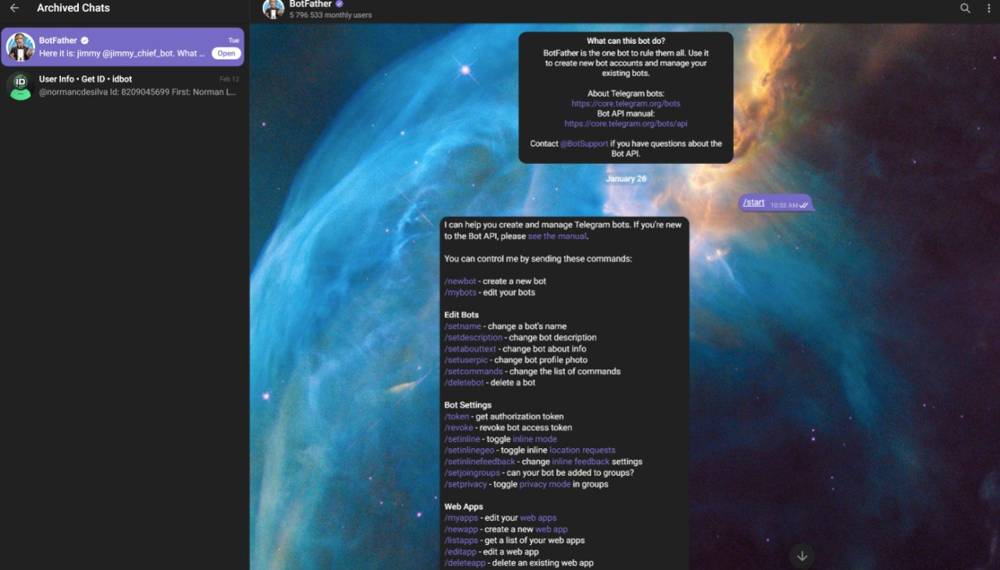

The Complete OpenClaw Setup Guide
From Zero to Your Own AI Assistant
From Zero to Your Own AI Assistant
The OpenClaw homepage - "The AI that actually does things"
OpenClaw is an open-source platform that transforms AI assistants like Claude from simple chatbots into powerful personal assistants that can actually do things on your behalf.
Unlike ChatGPT or Claude.ai where conversations stay trapped in a browser window, OpenClaw gives your AI assistant:
| Feature | ChatGPT / Claude.ai | OpenClaw |
|---|---|---|
| Runs locally on your machine | ❌ No | ✅ Yes |
| Persistent memory | ⚠️ Limited | ✅ Full file-based memory |
| Execute code & scripts | ❌ No | ✅ Yes |
| Message via chat apps | ❌ No | ✅ Telegram, Discord, WhatsApp, etc. |
| Custom tools & skills | ❌ No | ✅ Extensible skill system |
| Scheduled/autonomous tasks | ❌ No | ✅ Cron jobs, heartbeats |
| Data stays on your machine | ❌ No | ✅ Yes |
| Open source | ❌ No | ✅ Yes |
Before installing OpenClaw, make sure your system meets these requirements.
| Component | Minimum | Recommended |
|---|---|---|
| macOS Version | macOS 12 (Monterey) | macOS 13+ (Ventura/Sonoma) |
| RAM | 4 GB | 8 GB+ |
| Storage | 2 GB free | 5 GB+ free |
| Node.js | v22.0.0+ | Latest LTS |
| Component | Minimum | Recommended |
|---|---|---|
| Distribution | Ubuntu 20.04, Debian 11 | Ubuntu 22.04+, Debian 12+ |
| RAM | 4 GB | 8 GB+ |
| Storage | 2 GB free | 5 GB+ free |
| Node.js | v22.0.0+ | Latest LTS |
Most modern Linux distributions are supported. If you can run Node.js, you can run OpenClaw.
| Component | Minimum | Recommended |
|---|---|---|
| Windows Version | Windows 10 (with WSL2) | Windows 11 (with WSL2) |
| RAM | 8 GB | 16 GB+ |
| Storage | 5 GB free | 10 GB+ free |
| WSL | WSL2 required | WSL2 with Ubuntu 22.04 |
Open PowerShell as Administrator and run:
wsl --installThis installs WSL2 with Ubuntu by default. Restart your computer when prompted.
Open Terminal and run:
node --versionYou need v22.0.0 or higher. If not installed or outdated, continue to step 2.
The easiest way is using Homebrew:
# Install Homebrew (if you don't have it)
/bin/bash -c "$(curl -fsSL https://raw.githubusercontent.com/Homebrew/install/HEAD/install.sh)"
# Install Node.js
brew install nodeOr download directly from nodejs.org
Run the installer:
curl -fsSL https://get.openclaw.ai | bashThis downloads and installs OpenClaw globally.
openclaw --versionYou should see the version number (e.g., "OpenClaw 2026.2.9").
openclaw onboardThis starts the interactive setup wizard (covered in Chapter 4).
The process is nearly identical to macOS:
# Check Node.js version
node --version
# Install Node.js if needed (Ubuntu/Debian)
curl -fsSL https://deb.nodesource.com/setup_22.x | sudo -E bash -
sudo apt-get install -y nodejs
# Install OpenClaw
curl -fsSL https://get.openclaw.ai | bash
# Run onboarding
openclaw onboardOpenClaw onboarding wizard running in Windows Terminal
Open Windows Terminal and start your WSL2 Ubuntu instance:
wslcurl -fsSL https://deb.nodesource.com/setup_22.x | sudo -E bash -
sudo apt-get install -y nodejscurl -fsSL https://get.openclaw.ai | bashopenclaw onboardThe onboarding wizard (openclaw onboard) guides you through initial setup. It will:
The first screen shows a security notice. OpenClaw agents can:
Choose your AI provider. Options include:
| Provider | Models Available | Notes |
|---|---|---|
| Anthropic | Claude Opus, Sonnet, Haiku | Recommended for best results |
| OpenAI | GPT-4, GPT-4 Turbo, GPT-3.5 | Good alternative |
| OpenRouter | Multiple providers | Access many models with one API key |
Enter your API key for the chosen provider. You can get keys from:
~/.openclaw/ and never sent anywhere except the AI provider.
OpenClaw creates a workspace directory (default: ~/.openclaw/workspace) containing:
AGENTS.md — Agent behavior instructionsSOUL.md — Personality and guidelinesUSER.md — Information about youMEMORY.md — Long-term memorymemory/ — Daily memory filesThe wizard can set up messaging channels. You can skip this and add channels later. See Chapter 5 for detailed channel setup.
Finally, the wizard offers to start the gateway daemon. The gateway:
# Start gateway manually if needed
openclaw gateway start
# Check gateway status
openclaw statusChannels connect OpenClaw to messaging platforms. You can use multiple channels simultaneously.
Telegram is the most popular channel due to its excellent bot API and features.
Starting a conversation with BotFather
In Telegram, search for @BotFather and start a chat. BotFather is Telegram's official bot for creating and managing bots.
Send the command:
/newbotCreating a new bot with BotFather
BotFather asks for a display name (e.g., "Jimmy"). This is what users see in chats.
Choose a unique username ending in "bot" (e.g., jimmy_assistant_bot). This must be unique across all of Telegram.
BotFather gives you an API token like:
7123456789:AAHx3bKd9m7Rk_example_token_hereKeep this secret! Anyone with this token can control your bot.
Run the configuration command:
openclaw configureOr edit ~/.openclaw/openclaw.json directly:
{
"channels": {
"telegram": {
"enabled": true,
"botToken": "YOUR_BOT_TOKEN_HERE"
}
}
}openclaw gateway restartOpen Telegram, find your bot by username, and send a message. OpenClaw should respond!
/setprivacy) if you want your bot to see all messages in groups, not just commands.
Go to the Discord Developer Portal and click "New Application".
In your application, go to the "Bot" section and click "Add Bot".
Click "Reset Token" to get your bot token. Save it securely.
Under "Privileged Gateway Intents", enable:
Go to OAuth2 → URL Generator. Select:
bot, applications.commandsCopy the generated URL and open it to add the bot to your server.
{
"channels": {
"discord": {
"enabled": true,
"token": "YOUR_DISCORD_BOT_TOKEN"
}
}
}WhatsApp integration requires additional setup via third-party services or self-hosted solutions.
OpenClaw supports many other channels:
| Channel | Setup Complexity | Notes |
|---|---|---|
| Signal | Medium | Requires signal-cli |
| iMessage | Medium | macOS only, requires BlueBubbles |
| Slack | Easy | Create a Slack app |
| Microsoft Teams | Medium | Requires Azure AD app |
| Matrix | Easy | Open protocol |
After installation, verify everything is working correctly.
openclaw statusYou should see:

The OpenClaw web dashboard
Open your browser to:
http://localhost:18789The dashboard lets you:
Try these commands to verify functionality:
# Check version
openclaw --version
# View configuration
openclaw config get
# Test the agent directly
openclaw agent --message "Hello! Can you tell me the current time?"
# View logs
openclaw logs --tail 50Send a message to your bot through the configured channel (e.g., Telegram). You should receive a response within a few seconds.
openclaw logs for error messages.
Cause: OpenClaw isn't in your PATH.
Solution:
# Add to your shell profile (~/.bashrc, ~/.zshrc, etc.)
export PATH="$HOME/.openclaw/bin:$PATH"
# Then reload
source ~/.zshrc # or ~/.bashrcCause: Port 18789 is in use, or missing dependencies.
Solution:
# Check what's using the port
lsof -i :18789
# Kill the process or use a different port
openclaw gateway start --port 18790Causes & Solutions:
openclaw gateway startThe Gateway Overview shows connection status and helpful troubleshooting commands
Solution:
# Reconfigure your API key
openclaw configure
# Or edit directly
nano ~/.openclaw/openclaw.jsonSolutions:
Cause: Workspace not properly configured.
Solution:
# Check workspace path
openclaw config get workspace
# Verify files exist
ls -la ~/.openclaw/workspace/Solution:
# Get WSL IP address
hostname -I
# Use this IP instead of localhost from WindowsSolution:
# Update CA certificates
sudo apt update && sudo apt install ca-certificates
# Or set environment variable
export NODE_TLS_REJECT_UNAUTHORIZED=0 # Only for testing!Cause: Message Content Intent not enabled.
Solution: Go to Discord Developer Portal → Your App → Bot → Enable "Message Content Intent"
Solutions:
The main config file is at ~/.openclaw/openclaw.json
{
"agents": {
"defaults": {
"model": {
"primary": "anthropic/claude-sonnet-4-5"
},
"workspace": "/home/user/.openclaw/workspace",
"heartbeat": {
"every": "1h"
}
}
},
"channels": {
"telegram": {
"enabled": true,
"botToken": "...",
"dmPolicy": "pairing"
}
},
"gateway": {
"port": 18789,
"bind": "localhost"
}
}Available models (Anthropic):
anthropic/claude-opus-4-5 — Most capable, highest costanthropic/claude-sonnet-4-5 — Good balance (recommended)anthropic/claude-haiku-3-5 — Fastest, lowest cost| Variable | Purpose |
|---|---|
ANTHROPIC_API_KEY |
Anthropic API key |
OPENAI_API_KEY |
OpenAI API key |
OPENCLAW_CONFIG |
Custom config file path |
OPENCLAW_WORKSPACE |
Custom workspace path |
Skills extend OpenClaw's capabilities. They're like plugins that add new abilities.
OpenClaw comes with these tools enabled by default:
Find skills at clawhub.com or the OpenClaw Discord.
# Install a skill
openclaw skills install weather
# List installed skills
openclaw skills list
# Remove a skill
openclaw skills remove weatherSkills are directories containing:
SKILL.md — Instructions for the agentscripts/ — Helper scripts (optional)assets/ — Additional files (optional)| Command | Description |
|---|---|
openclaw gateway start |
Start the gateway daemon |
openclaw gateway stop |
Stop the gateway daemon |
openclaw gateway restart |
Restart the gateway |
openclaw gateway status |
Check gateway status |
| Command | Description |
|---|---|
openclaw agent --message "..." |
Send a message to the agent |
openclaw agent --thinking high |
Enable extended thinking |
| Command | Description |
|---|---|
openclaw configure |
Run interactive configuration |
openclaw config get |
View current configuration |
openclaw doctor |
Diagnose common issues |
| Command | Description |
|---|---|
openclaw status |
Show overall status |
openclaw logs |
View gateway logs |
openclaw --version |
Show version |
openclaw help |
Show help |